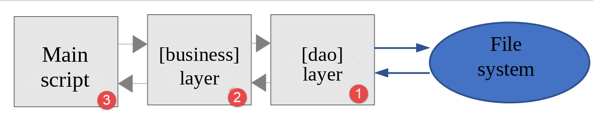
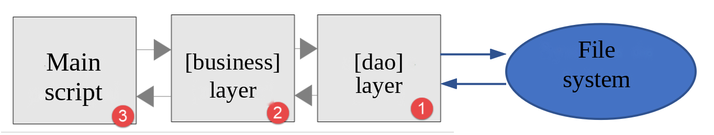

11. Ejercicio de aplicación – Versión 4
La aplicación de cálculo de impuestos implementará ahora la siguiente estructura en capas:

Reutilizaremos los componentes de la versión 3, modificándolos para adaptarlos a la nueva arquitectura de la aplicación. Esto se denomina “refactorización” (reescritura del código). Aquí supondremos que los datos que necesita la aplicación se almacenan en archivos de texto. La capa [dao] gestionará las interacciones con estos archivos.
11.1. Estructura de carpetas de los scripts
La versión 4 se encuentra en la carpeta [scripts-console/tax/version-04]:
La carpeta [Tests] contiene las pruebas automatizadas de la versión 4, que presentaremos al final de este capítulo.
11.2. Objetos intercambiados entre capas
Conservamos ciertos elementos de la versión 3 exactamente como estaban:
- la excepción [TaxException] es la que lanzará la capa [dao] cuando encuentre un problema, ya sea de acceso a los datos o de la naturaleza de los datos (datos incorrectos);
- la clase [Utilities] contiene métodos útiles para gestionar archivos de texto (en este caso, un único método, [cutNewLineChar]);
- La clase [readonly] [TaxAdminData] encapsula los datos de la administración tributaria. Se accede a ella mediante el método estático [TaxAdminData::fromJsonFile($taxAdminDataFilename)] (o [TaxAdminData::fromArray($data)]), que valida los datos y lanza una excepción [TaxException] si los datos no son válidos.
Agregamos una nueva clase, [TaxPayerData], que encapsula los datos de un contribuyente y los resultados de su cálculo de impuestos ([TaxPayerData.php]):
Comentarios
- línea 9: al igual que [TaxAdminData], la clase [TaxPayerData] es inmutable: sus objetos pasan de una capa a otra sin riesgo de ser modificados en el camino;
- líneas 13–15: los datos del contribuyente necesarios para calcular su impuesto;
- líneas 17–21: los resultados del cálculo del impuesto. Son campos que admiten valores nulos ([?int], [?float]) con el valor predeterminado [null]: primero se crea un objeto [TaxPayerData] mediante la capa [dao], que contiene solo los datos del contribuyente, a partir de [new TaxPayerData("yes", 2, 55555)], ya que el impuesto todavía no se ha calculado. Los nombres de los atributos son los de las claves JSON del archivo de resultados de la versión 3: el archivo [results.txt] conservará así el mismo formato;
- líneas 27–36: como el objeto es inmutable, no se le pueden agregar los resultados del cálculo. El método [withResults] devuelve una copia del objeto complementada con los resultados. Usa el operador [clone] de PHP 8.5, que acepta como segundo parámetro un arreglo de atributos que se modificarán en la copia (véase el capítulo sobre las clases). El curso de PHP 7 usaba un objeto modificable con ocho getters y ocho setters;
- líneas 39–42: el método [__toString] devuelve la cadena JSON del objeto. Se usará para escribir el archivo de resultados.
11.3. La capa [dao]
Aquí nos centramos en la capa [1] de nuestra aplicación:

11.3.1. La interfaz [InterfaceDao]
La interfaz de la capa [dao] será la siguiente: [InterfaceDao.php]:
Comentarios
- Las especificaciones son las siguientes:
- los datos de los contribuyentes se almacenan en un archivo de texto;
- los resultados del cálculo de impuestos se guardan en un archivo de texto;
- los errores se guardan en un archivo de texto;
- no se sabe en qué formato están disponibles los datos de la administración tributaria. Para cada nuevo formato, la interfaz [InterfaceDao] debe ser implementada por una nueva clase;
- los métodos de la interfaz que encuentren un error fatal al acceder a los datos deben lanzar una excepción [TaxException];
- línea 15: el método que recupera los datos de los contribuyentes [estado civil, número de hijos, salario anual]:
- el primer parámetro es el nombre del archivo de texto que contiene estos datos;
- el segundo parámetro es el nombre del archivo de texto en el que se registrarán los errores que se encuentren;
- línea 14: el tipo [array] no especifica qué contiene el arreglo. El comentario de documentación [/** @return TaxPayerData[] */] (sintaxis PHPDoc) especifica que se trata de un arreglo de objetos [TaxPayerData]. PHP lo ignora, pero la extensión [PHP Intelephense] de [VS Code] lo utiliza: así conoce el tipo de los elementos del arreglo y puede sugerir sus atributos durante la escritura;
- línea 18: el método que recupera los datos de la administración tributaria. No se le pasan parámetros porque no sabemos cómo se almacenan los datos;
- línea 22: el método que guarda los resultados del cálculo de impuestos en un archivo de texto, cuyo nombre se pasa como parámetro.
Al escribir la interfaz [InterfaceDao], sabemos que habrá distintas maneras de implementar el método [getTaxAdminData] según cómo se almacenen los datos de la administración tributaria. Por lo tanto, la interfaz [InterfaceDao] será implementada por distintas clases, cada una de las cuales gestionará un método de almacenamiento específico para estos datos (archivo JSON, base de datos, servicio web). Sin embargo, estas clases compartirán código común: la implementación de los métodos [getTaxPayersData] y [saveResults]. Como vimos en el capítulo sobre los traits, este caso de uso puede implementarse de dos maneras:
- Se crea una clase abstracta C que contiene el código común a las clases derivadas. La clase C implementa la interfaz I, pero ciertos métodos —que deben definirse en las clases derivadas— se declaran abstractos en la clase C, que por lo tanto es a su vez abstracta. Luego se crean las clases C1 y C2 derivadas de C, cada una de las cuales implementa a su manera los métodos abstractos de su clase padre C;
- se crea un trait T casi idéntico a la clase abstracta C de la solución anterior. Este trait no implementa la interfaz I porque, sintácticamente, no puede. Luego se crean las clases C1 y C2, que implementan la interfaz I y usan el trait T. A estas clases solo les resta implementar los métodos de la interfaz I que no están implementados por el trait T que importan.
Para este ejemplo usaremos un trait [TraitDao]. La versión 3 usaba una clase abstracta.
11.3.2. El trait [TraitDao]
El código del trait [TraitDao] es el siguiente: [TraitDao.php]:
Comentarios
- línea 9: aquí definimos un trait, no una clase;
- línea 12: una constante separadora de campos (PHP 8.2), tipada (PHP 8.3): el separador de campos de una línea del archivo de contribuyentes. Pasa a ser una constante de la clase que usa el trait y se utiliza con la notación [self::SEPARATOR];
- línea 15: a partir de PHP 8.3, el atributo [#[\Override]] se acepta en un método de un trait. Esto se verifica en la clase que usa el trait: aquí, el método debe corresponder a un método de la interfaz [InterfaceDao] implementada por esta clase;
- líneas 16–74: el método [getTaxPayersData] implementa el método del mismo nombre de la interfaz [InterfaceDao]. Recupera los datos de los contribuyentes [estado civil, número de hijos, salario anual] del archivo de texto cuyo nombre es [$taxPayersFilename]. Devuelve estos datos en forma de un arreglo [$taxPayersData] que contiene elementos de tipo [TaxPayerData] (línea 58);
- El método [getTaxPayersData] es muy similar al método [AbstractBaseTax::executeBatchTaxes] de la versión 3, con las siguientes diferencias:
- el método [getTaxPayersData] solo recupera los datos de los contribuyentes. No realiza ningún cálculo de impuestos: ese es el rol de la capa [business];
- al igual que el método [executeBatchTaxes], señala las filas erróneas. Aquí, los errores se almacenan primero en un arreglo llamado [$errors], que se escribe en un archivo de texto al final del procesamiento (línea 71). Según la situación, este arreglo puede estar vacío o no. Una línea errónea ya no provoca una excepción: corresponde al código que llama consultar el archivo de errores;
- en caso de error fatal, se lanza una excepción [TaxException] (línea 25, línea 64);
- líneas 23–26: el archivo se abre antes de la estructura [try / finally]. Si falla la apertura del archivo, se lanza una excepción y no hay nada que cerrar. Si tiene éxito, la cláusula [finally] (líneas 66–69) garantiza que el archivo se cierre, se produzca o no una excepción. Este enfoque evita la comprobación “¿se abrió el archivo?” que había en la versión 3;
- líneas 62–65: observe el procesamiento que se realiza al salir del bucle de lectura. La función [fgets] tiene el inconveniente de devolver [false] tanto cuando la lectura llega al final del archivo como cuando falla por un error. Para distinguir ambos casos, comprobamos si se llegó al final del archivo mediante la función [feof]. Si no es así, se produjo un error y entonces se lanza una excepción;
- líneas 78–82: implementación del método [saveResults] de la interfaz [InterfaceDao]. Cada elemento [TaxPayerData] del arreglo se convierte en cadena mediante la función [strval], que llama al método [__toString] del objeto: esto produce su cadena JSON. [strval(...)] hace referencia a la propia función [strval] (callable de primera clase, PHP 8.1);
- líneas 85–92: el método privado [saveLines] escribe un arreglo de líneas en un archivo de texto, con cada línea terminada por el carácter de fin de línea \n;
- línea 89: la función PHP [file_put_contents] escribe una cadena en un archivo de texto. Abre el archivo, escribe la cadena en él y lo cierra. Devuelve [false] si se produce un error. En ese caso, PHP también emite una advertencia. El operador [@] suprime esta advertencia: el error se informa mediante la excepción lanzada en la línea siguiente, con un mensaje más claro.
El trait [TraitDao] ha implementado dos de los métodos de la interfaz [InterfaceDao]: [getTaxPayersData] y [saveResults]. Aún falta implementar el método [getTaxAdminData], que recupera los datos de la administración tributaria.
11.3.3. La clase [DaoTaxWithTaxAdminDataInJsonFile]
La clase [DaoTaxWithTaxAdminDataInJsonFile] implementa la interfaz [InterfaceDao] de la siguiente manera:
Comentarios
- línea 9: la clase [DaoTaxWithTaxAdminDataInJsonFile] implementa la interfaz [InterfaceDao];
- línea 12: la clase usa el trait [TraitDao], que, como sabemos, implementa los métodos [getTaxPayersData] y [saveResults] de la interfaz [InterfaceDao]. A la clase solo le resta implementar el método [getTaxAdminData], que recupera los datos de la administración tributaria;
- línea 15: el atributo de tipo [TaxAdminData] que devuelve el método [getTaxAdminData]. Lo inicializa el constructor;
- línea 21: los datos de la administración tributaria se leen del archivo JSON. Si el archivo no existe o no es válido, se lanza una excepción [TaxException] al código que llama.
Con esto terminamos la capa [dao] de nuestra aplicación: tenemos una clase que implementa por completo la interfaz [InterfaceDao] que definimos. Ahora podemos pasar a la capa [business].
11.4. La capa [business]
Ahora implementaremos la capa [2] de nuestra arquitectura:

11.4.1. La interfaz [InterfaceBusiness]
La interfaz de la capa [business] será la siguiente: [InterfaceBusiness.php]:
Comentarios
- línea 13: la capa [business] puede calcular el monto del impuesto de un contribuyente específico siempre que se le proporcione la siguiente información: estado civil, número de hijos y salario anual. El método [calculateTax] es puramente un método “de negocio”: no se ocupa del origen de los datos que usa. No utiliza la capa [dao], por lo que no lanza ninguna excepción;
- línea 17: la capa [business] también puede calcular el monto del impuesto de un grupo de contribuyentes cuyos datos se reúnen en el archivo de texto llamado [$taxPayersFileName]. Escribe los resultados en el archivo de texto llamado [$resultsFileName]. Los errores no fatales se registran en el archivo de texto llamado [$errorsFileName]. El método [executeBatchTaxes] debe llamar a la capa [dao], que gestiona el acceso al sistema de archivos. Por lo tanto, la capa [dao] puede propagar excepciones: el método [executeBatchTaxes] no las capturará, sino que dejará que se propaguen hasta el script principal.
11.4.2. La clase [Business]
La clase [Business] implementa la interfaz [InterfaceBusiness] de la siguiente manera:
Comentarios
- línea 9: la clase [Business] implementa la interfaz [InterfaceBusiness], es decir, los métodos [calculateTax] y [executeBatchTaxes] ;
- línea 12: el objeto de tipo [TaxAdminData], que encapsula los datos de la administración tributaria. El método de negocio [calculateTax] requiere estos datos;
- líneas 15–21: el constructor inicializa los dos atributos de la clase:
- el atributo [$dao], una referencia a la capa [dao], se inicializa mediante la promoción del parámetro del constructor. Esto es necesario para que la capa [business] sepa a quién dirigirse cuando necesite datos externos. Observe que el tipo de este parámetro es el de la interfaz [InterfaceDao], lo que permite que la clase [Business] trabaje con cualquier clase que implemente esta interfaz. El curso de PHP 7 ofrecía además un setter [setDao]: ya no existe, pues la capa [dao] se inyecta una vez por todas mediante el constructor;
- el atributo [$taxAdminData] se inicializa llamando al método [getTaxAdminData] de la capa [dao];
- concluimos que, cuando se ejecutan los métodos [calculateTax] y [executeBatchTaxes] , ambos atributos [$dao] y [$taxAdminData] están inicializados. La prueba [$this->taxAdminData ??= $this->getTaxAdminData()]de la versión 3 ya no es necesaria;
- líneas 26–77: este código proviene del método [AbstractBaseTax::calculateTax] de la versión 3. Lo mismo ocurre con los métodos privados [calculateTax2], [getTaxableIncome], [getDiscount] y [getReduction], que no se reproducen aquí.
El método [Business::executeBatchTaxes] es el siguiente:
Comentarios
- línea 188: el método debe llamar repetidamente al método [calculateTax] para cada contribuyente que se encuentre en el archivo de texto llamado [$taxPayersFileName] y escribir los resultados en el archivo de texto llamado [$resultsFileName]. Los errores no fatales que se encuentren se registran en el archivo de texto llamado [$errorsFileName]. El método no lanza ninguna excepción por sí mismo, sino que deja que se propaguen las lanzadas por la capa [dao];
- línea 192: se solicitan los datos de los contribuyentes a la capa [dao]. Esta capa devuelve un arreglo de elementos de tipo [TaxPayerData]. Si aquí se produce una excepción, como no la captura ningún [catch], se propaga automáticamente al código que llama y el resto del método no se ejecuta;
- líneas 194–199: la función [array_map] aplica una función a cada elemento del arreglo [$taxPayersData] y devuelve el arreglo de resultados. La función aplicada es una función flecha que calcula el impuesto del contribuyente [$taxPayerData] y devuelve una copia de [$taxPayerData] completada con los resultados del cálculo (línea 195). Observe que la función flecha usa [$this]: una función flecha captura automáticamente las variables de su contexto, incluido [$this];
- línea 201: una vez calculado el impuesto de todos los contribuyentes, los resultados se guardan en un archivo de texto. La capa [dao] se encarga de esta tarea.
En general, la capa [business] es bastante sencilla de escribir porque se comunica con la capa [dao], que gestiona el acceso a los datos y el manejo de errores asociado.
11.5. El script principal
Ahora escribamos el script de la capa [3] de nuestra arquitectura:

El script principal es el siguiente: [main.php]:
Comentarios
- líneas 10–18: se cargan las clases, interfaces y traits de la aplicación. Un trait debe cargarse antes que la clase que lo usa;
- línea 21: el nombre del archivo de datos de los contribuyentes;
- línea 22: el nombre del archivo de resultados;
- línea 23: el nombre del archivo de errores;
- línea 24: el nombre del archivo JSON que contiene los datos de la administración tributaria;
- línea 28: creación de la capa [dao];
- línea 30: creación de la capa [business] a partir de la capa [dao];
- línea 32: ejecución del método [executeBatchTaxes] de la capa [business];
- líneas 34–37: como vimos, las capas [dao] y [business] pueden lanzar excepciones. Aquí se las captura.
11.6. Pruebas visuales
11.6.1. Prueba n.º 1
Ejecute el script [main.php] en una ventana de terminal abierta en la carpeta [version-04]:
Con el archivo de contribuyentes [taxpayersdata.txt] de la versión 3:
se genera el siguiente archivo de errores [errors.txt]:
y el siguiente archivo de resultados [results.txt]:
Estos son los resultados de la versión 3.
11.6.2. Prueba n.º 2
En el script principal, asignamos al archivo de contribuyentes un nombre de archivo que no existe:
Los resultados que se muestran en la consola son los siguientes:
Solo se muestra el mensaje de la excepción lanzada por la capa [dao]. En el curso de PHP 7, se llamaba a la función [fopen] sobre el archivo inexistente: el intérprete de PHP mostraba entonces una advertencia antes del mensaje de la excepción:
El curso de PHP 7 suprimía este mensaje indicando a PHP que no mostrara los errores mediante la instrucción [ini_set("display_errors", "0")]. Esta es la configuración correcta para un servidor de producción (los errores se escriben entonces en un archivo de registro), pero durante el desarrollo es necesario ver todos los mensajes de PHP. Por eso preferimos no provocar la advertencia: la capa [dao] usa la función [is_readable] para verificar que el archivo se pueda leer antes de abrirlo.
11.7. Pruebas con [PHPUnit]
Las pruebas visuales son claramente insuficientes:
- por lo general nos limitamos a unas pocas pruebas;
- es posible que no prestemos mucha atención durante esta verificación visual y que se nos escapen detalles.
En el desarrollo profesional real, las pruebas se escriben como código y se ejecutan automáticamente, a menudo después de cada cambio en el código. El objetivo es que las pruebas sean lo más completas posible. Para lograrlo, se usan frameworks de pruebas.
Aquí usaremos [PHPUnit] [https://phpunit.de/], el framework de pruebas estándar en PHP. El curso de PHP 7 usaba el framework [Codeception], que se eligió porque se integraba con el IDE NetBeans y que, dicho sea de paso, usaba PHPUnit internamente. Usaremos solo una pequeña parte de las capacidades de PHPUnit. La idea es contar con una forma rápida de verificar, después de cada nueva versión del ejercicio de aplicación, que este funciona. Las pruebas exitosas dan al desarrollador confianza en el código que ha escrito. Este es un factor importante.
11.7.1. Instalación de [PHPUnit]
Como muchas bibliotecas de PHP, [PHPUnit] se instala con [Composer], el gestor de dependencias de PHP, que se incluye con [Laragon]. La carpeta [php8-oct-2026] que contiene el código del curso incluye un archivo llamado [composer.json] que enumera las bibliotecas que usa el curso. PHPUnit aparece allí en la sección [require-dev], que contiene las bibliotecas usadas únicamente para el desarrollo:
Si aún no lo ha hecho, simplemente abra una terminal en la carpeta [php8-oct-2026] y escriba el siguiente comando:
[Composer] descargará entonces todas las bibliotecas enumeradas en [composer.json] en la carpeta [vendor] dentro de [php8-oct-2026]. PHPUnit se instala allí junto con su ejecutable, [vendor/bin/phpunit]. En un proyecto que todavía no tenga PHPUnit, se agregaría con el comando [composer require --dev phpunit/phpunit], que lo descarga y lo registra en la sección [require-dev] del archivo [composer.json].
La versión 12 de PHPUnit requiere PHP 8.3 o posterior. Su documentación está disponible en [https://docs.phpunit.de/].
11.7.2. El archivo de configuración [phpunit.xml]
La carpeta [php8-oct-2026] contiene también el archivo de configuración de PHPUnit, [phpunit.xml]. Cuando PHPUnit se inicia desde esta carpeta, usa automáticamente este archivo:
Comentarios
- línea 5: el esquema XML, que describe la sintaxis del archivo. [VS Code] lo usa para validar el archivo y sugerir los atributos posibles;
- línea 6: no se usan colores en la presentación de los resultados. Puede usar [true] para mostrar en la terminal las pruebas exitosas en verde y las fallidas en rojo;
- líneas 7–10: una prueba que provoque una deprecación, un aviso o una advertencia de PHP se considera fallida, aunque se cumplan sus aserciones. Es una forma de imponer un código PHP 8 limpio: por ejemplo, usar una característica obsoleta en PHP 8.5 haría fallar las pruebas;
- líneas 11–13: en estos casos, PHPUnit muestra los detalles del mensaje de PHP;
- línea 14: la carpeta donde PHPUnit almacena información de una ejecución a otra (por ejemplo, las pruebas que fallaron, para ejecutarlas primero la siguiente vez);
- líneas 15–20: las carpetas que contienen el código fuente sometido a prueba. [ignoreSuppressionOfDeprecations] indica que una deprecación se informa aunque haya sido suprimida por el operador [@].
11.7.3. Pruebas de la capa [dao]
Las pruebas de la versión 4 están en la carpeta [version-04/Tests]. Una clase de prueba de PHPUnit:
- extiende la clase [PHPUnit\Framework\TestCase];
- tiene un nombre que termina en [Test], en un archivo del mismo nombre: así es como PHPUnit encuentra las clases de prueba en una carpeta;
- tiene métodos de prueba públicos cuyos nombres comienzan con [test];
- puede tener un método llamado [setUp], que se ejecuta antes de cada método de prueba, y un método llamado [tearDown], que se ejecuta después de cada método de prueba. Sirven para preparar el entorno de prueba y luego limpiarlo. Así, cada método de prueba se ejecuta en un entorno nuevo, independiente de los demás.
En un método de prueba, los resultados se verifican mediante métodos de aserción heredados de [TestCase], por ejemplo:
Aserción | Verifica que |
[assertSame($expected, $actual)] | los dos valores son idénticos ([===]: mismo tipo y mismo valor) |
[assertEquals($expected, $actual)] | los dos valores son iguales ([==]) |
[assertEqualsWithDelta($expected, $actual, $delta)] | ambos números son iguales con una tolerancia de [$delta] |
[assertTrue($actual)], [assertFalse($actual)], [assertNull($actual)] | el valor es [true], [false], [null] |
[assertCount($n, $array)] | el arreglo tiene [$n] elementos |
[assertStringContainsString($substring, $string)] | la cadena contiene la subcadena |
[expectException($class)] | el siguiente código lanza una excepción de la clase especificada |
Para construir las pruebas de una versión del ejercicio de aplicación, usamos un entorno idéntico al del script principal [main.php] de esa versión: se cargan los mismos archivos y se construyen las mismas capas de la misma manera.
La clase de prueba [DaoTest] es la siguiente: [Tests/DaoTest.php]:
1 2 3 4 5 6 7 8 9 10 11 12 13 14 15 16 17 18 19 20 21 22 23 24 25 26 27 28 29 30 31 32 33 34 35 36 37 38 39 40 41 42 43 44 45 46 47 48 49 50 51 52 53 54 55 56 57 58 59 60 61 62 63 64 65 66 67 68 69 70 71 72 73 74 75 76 77 78 79 80 81 82 83 84 85 86 87 88 89 90 91 92 93 94 95 96 97 98 99 100 101 102 103 104 105 106 107 108 109 110 111 112 113 114 115 116 117 118 119 120 121 | |
Comentarios
- línea 7: las clases de prueba están en el espacio de nombres [Application\Tests], que es distinto del de la aplicación;
- líneas 10–16: las clases utilizadas se importan con la instrucción [use]. Las clases de la aplicación están en el espacio de nombres [Application], y las de PHPUnit en [PHPUnit\Framework];
- líneas 19–25: se cargan los archivos de la capa [dao], como en [main.php]. Las rutas son relativas a la carpeta del archivo de prueba ([__DIR__]): las pruebas se ejecutan sin importar desde qué carpeta se inicie PHPUnit ni dónde se encuentre la carpeta [php8-oct-2026] en el disco. El curso de PHP 7 usaba rutas absolutas ([C:/Data/...]) propias de la máquina del autor. Las clases de PHPUnit, en cambio, las carga automáticamente el cargador de [Composer], que PHPUnit inicializa;
- línea 27: la clase de prueba extiende [TestCase];
- línea 30: la carpeta de la versión 4, donde se encuentran los archivos de datos;
- líneas 38–44: antes de cada prueba, la capa [dao] se construye como lo hace [main.php], y se crea un archivo temporal para los errores. La función [tempnam] crea un archivo con nombre único en la carpeta de archivos temporales del sistema, que devuelve [sys_get_temp_dir]. El curso de PHP 7 realizaba esta tarea en el constructor de la clase de prueba: a partir de PHPUnit 10, ya no es necesario redefinir el constructor de [TestCase] ;
- líneas 48–52: después de cada prueba, se elimina el archivo temporal;
- líneas 55–73: prueba de los datos de la administración tributaria. Verificamos que el contenido del objeto [TaxAdminData] devuelto por la capa [dao] coincida con lo esperado. Se usa el método [assertSame]: [assertSame(1551.0, ...)] verifica que el valor sea el número real 1551.0; [assertSame(1551, ...)] fallaría porque el entero 1551 no es idéntico al número real 1551.0. En el caso de los arreglos, [assertSame] verifica que los dos arreglos tengan las mismas claves, en el mismo orden, con valores idénticos;
- líneas 76–85: un proveedor de datos. Es un método público estático que devuelve un arreglo de conjuntos de datos. Cada conjunto de datos es un arreglo de argumentos que se pasarán a un método de prueba. La clave de cada conjunto de datos (“non-existent file”...) le da un nombre que aparecerá en los resultados de las pruebas;
- línea 87: el atributo de PHP 8 [#[DataProvider]] indica que el método de prueba [testInvalidTaxAdminData] debe ejecutarse una vez por cada conjunto de datos del proveedor [invalidFiles]. Las versiones de PHPUnit anteriores a la 10 usaban en su lugar una anotación en un comentario: las anotaciones ya no se reconocen a partir de PHPUnit 12;
- Líneas 88–95: se verifica que una capa construida con un archivo de datos tributarios incorrecto lance una excepción con el código de error correcto. Los métodos [expectException] y [expectExceptionCode] deben llamarse antes de el código que lanza la excepción: la prueba se aprueba si se lanza la excepción; de lo contrario, falla. Los archivos incorrectos están en la carpeta [Tests/data]: un archivo JSON mal formado (falta una coma), un archivo al que le falta la clave [coupleDiscountCeiling] y un archivo con un valor negativo;
- líneas 98–112: la prueba de lectura de los datos de los contribuyentes. El archivo [taxpayersdata.txt] de la versión 4 contiene 11 líneas correctas y 2 líneas erróneas. Verificamos el número de contribuyentes recuperados, su tipo ([assertContainsOnlyInstancesOf]), el contenido del primer y del último registro, y luego el contenido del archivo de errores. Para comparar dos objetos [TaxPayerData] usamos [assertEquals]: dos objetos distintos nunca son idénticos ([===]), pero son iguales ([==]) si sus atributos son iguales;
- líneas 115–120: un archivo de contribuyentes inexistente debe provocar una excepción con el código 12.
11.7.4. Ejecución de las pruebas
Las pruebas se ejecutan en una terminal abierta en la carpeta [php8-oct-2026], pasando a PHPUnit la carpeta de pruebas:
- línea 5: PHPUnit encontró y usó el archivo de configuración [phpunit.xml];
- línea 7: un punto por cada prueba exitosa. Las 18 pruebas son las de las dos clases de prueba [DaoTest] y [BusinessTest] (esta última se describe en el párrafo siguiente): una prueba ejecutada con un proveedor de datos cuenta como tantas pruebas como conjuntos de datos haya;
- línea 11: los resultados: todas las pruebas se aprobaron.
La opción [--testdox] ofrece una presentación más descriptiva, en la que cada prueba se describe mediante una oración compuesta por el nombre de su método y el nombre de su conjunto de datos:
Veamos ahora una prueba que falla. En la clase [BusinessTest] introducimos un error en la reducción esperada para el segundo contribuyente (346 en lugar de 347). Al ejecutar las pruebas se obtiene entonces el siguiente resultado:
- línea 7: la letra F (Failure) indica la prueba que falló;
- línea 13: la prueba que falló, junto con el nombre y el contenido de su conjunto de datos;
- líneas 14–24: la aserción que falló ([assertSame]) y la diferencia entre los arreglos esperado (-) y real (+);
- línea 26: el archivo y el número de línea de la aserción que falló;
- líneas 28–29: el resumen.
Cuando una prueba ni siquiera se ejecuta (por ejemplo, porque no se encuentra un archivo cargado con [require_once] ), PHPUnit muestra el error de PHP correspondiente, igual que lo haría la ejecución de un script PHP normal.
11.7.5. Pruebas de la capa [business]
La clase de prueba [BusinessTest] sigue las mismas reglas de construcción que la clase [DaoTest]: [Tests/BusinessTest.php]:
Comentarios
- líneas 18–26: carga de los archivos de las capas [dao] y [business]. El entorno de prueba es el mismo que el de [main.php];
- líneas 37–43: instanciación de las capas [dao] y [business], como en [main.php];
- líneas 46–73: el proveedor de datos: los once contribuyentes de la tabla de cifras oficiales. Cada conjunto de datos contiene los datos del contribuyente, el monto del impuesto generado por el simulador oficial de la administración tributaria [https://www3.impots.gouv.fr/simulateur/calcul_impot/2019/simplifie/index.htm] y los resultados esperados del algoritmo descrito en el documento;
- línea 76: el método [testCalculateTax] se ejecutará once veces, una por contribuyente. El curso de PHP 7 incluía originalmente once métodos de prueba casi idénticos, de [test1] a [test11]; el proveedor de datos elimina esta duplicación;
- línea 80: el cálculo del impuesto lo realiza la capa [business];
- línea 82: se verifica que el impuesto calculado coincida con el resultado del simulador oficial con una diferencia máxima de 1 euro. Hemos visto que los problemas de redondeo hacían que el algoritmo del documento arrojara resultados que diferían de los oficiales hasta en 1 euro;
- línea 84: se verifica que la tabla de resultados [tax, surcharge, discount, reduction, rate] sea exactamente la esperada, incluidos los tipos de datos: enteros para los montos, un número real para la tasa. Por eso la tasa del 9.º contribuyente se escribe 0.0 y no 0. Esta verificación precisa protege contra cualquier cambio involuntario en el algoritmo en versiones futuras.
Los resultados de ejecutar estas pruebas son los que se muestran en el párrafo anterior: las 11 pruebas de la capa [business] se aprueban.
11.7.6. PHPUnit en VS Code
La forma más sencilla de ejecutar las pruebas en [VS Code] es usar su terminal integrada (menú Terminal / Nueva terminal): se abre en la carpeta [php8-oct-2026] del proyecto y allí se escribe el comando [php vendor/bin/phpunit scripts-console/tax/version-04/Tests]. La flecha hacia arriba del teclado recupera el último comando: volver a ejecutar las pruebas después de modificar el código requiere una sola pulsación de tecla.
Algunas opciones útiles del comando [phpunit]:
- [--testdox]: muestra las pruebas como oraciones;
- [--filter testCalculateTax]: ejecuta solo las pruebas cuyos nombres contienen el texto especificado;
- [--stop-on-failure]: se detiene en el primer fallo.
También existen extensiones para [VS Code] que integran PHPUnit en el explorador de pruebas del editor (por ejemplo, la extensión “PHPUnit Test Explorer”): permiten ejecutar una prueba con un solo clic y mostrar los resultados junto al código. En realidad ejecutan el mismo comando [phpunit] que escribimos en la terminal.
11.7.7. Pruebas de las versiones siguientes
En adelante, las pruebas de las capas [dao] y [business] serán idénticas a las de la versión 4. Lo único que cambiará es el entorno de prueba: los archivos cargados y la manera en que se construyen las capas [dao] y [business]. Por lo tanto, presentaremos solo este y los resultados de las pruebas.